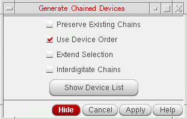
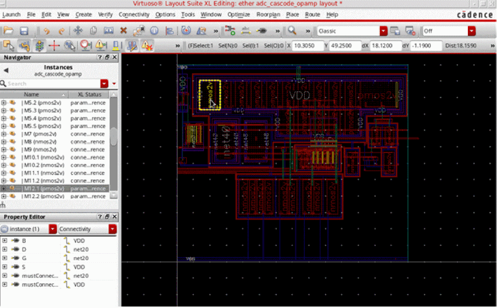
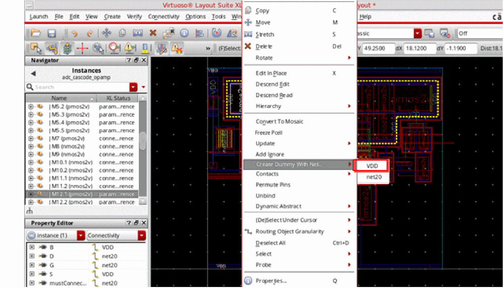
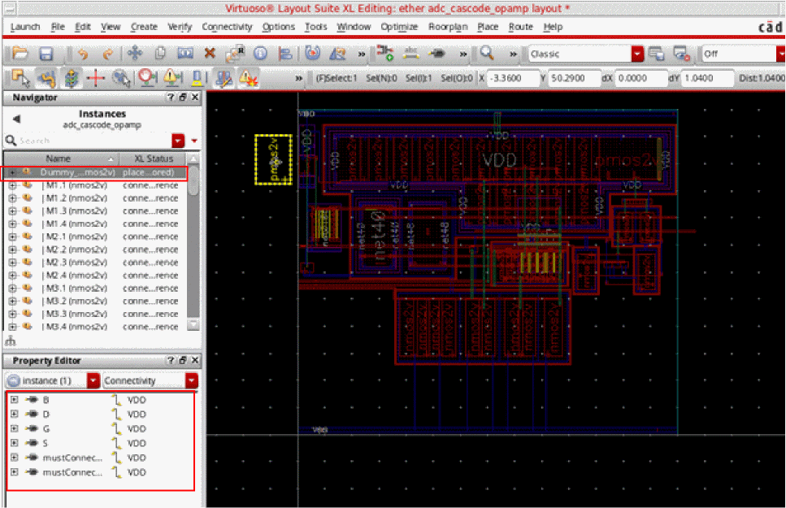

Chaining Dummy Instances
-
Choose Connectivity – Generate Chained Devices.
The Generate Chained Devices form is displayed.
 -
Select the Use Device Order check box. This ensures that the dummy instances are treated as regular devices during the chaining operation.
If you do not select the Use Device Order check box, the dummy instances are ignored during chaining, and therefore, are left unchained. - Select the other appropriate options on the form, as required.
-
Click the Show Device List button and select the devices to be chained.
To select multiple devices, hold the Ctrl button while you select the devices. - Click Apply.
The chained devices are available for placement in the layout.
Example – Demonstrating Flexible Connectivity on Dummy Instances
Let us consider the scenario displayed in the figure below to see how dummy instances support flexible connectivity. Let us first create a dummy instance for the pmos device highlighted in the figure below. For this scenario, we will create a dummy for pmos device, |M12.2, using net VDD.

-
Select the pmos device and use the Property Editor – Connectivity property category selector to view the original connectivity of the device. As displayed in the figure above, the selected device has its Drain, D, connected to
net20. -
Right-click the highlighted pmos device and choose Create Dummy With Net – VDD from the shortcut menu, as displayed in the figure below.
 -
Click the pmos device in the layout canvas again to derive the reference point for dummy generation.
A copy of the device now follows the mouse pointer.
If you select the CIW – Options – User Preferences – Infix (No Click Necessary for First Point) check box prior to invoking the dummy generation command, a copy of the selected device follows the mouse pointer as soon as the net for creating the dummy is selected. -
Click anywhere in the layout to place the dummy instance.
A dummy instance of the selected device is now generated. For this scenario, the dummy instance is listed in the Navigator assistant as displayed in the figure below.
 - In the Navigator assistant or the layout canvas, select the dummy instance to view its connectivity.
- In the Property Editor assistant, choose the Connectivity property category to view the connectivity of the selected dummy instance. For this scenario, the dummy instance appears connected to VDD—the net that was used to create the dummy instance.
- Move the dummy instance around such that it overlaps another layout device and abuts to it.
- In the Property Editor assistant, the connectivity of the dummy instance now appears changed to that of the device that the dummy has abutted.
- Move the dummy instance away from the device it had abutted with such that the dummy instance is not abutted any more.
- In the Property Editor assistant, the connectivity of the dummy instance now appears same as that before abutment.
The example above illustrates that dummy instances take the connectivity of the device that they abut with. When a dummy instance is no longer abutted, it restores its original connectivity.
Related Topics
Return to top